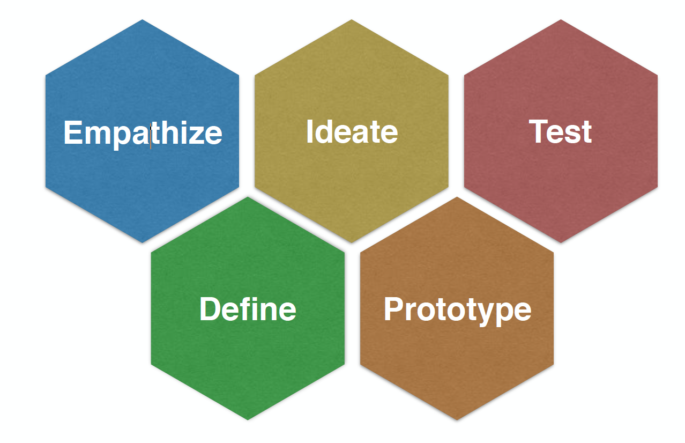
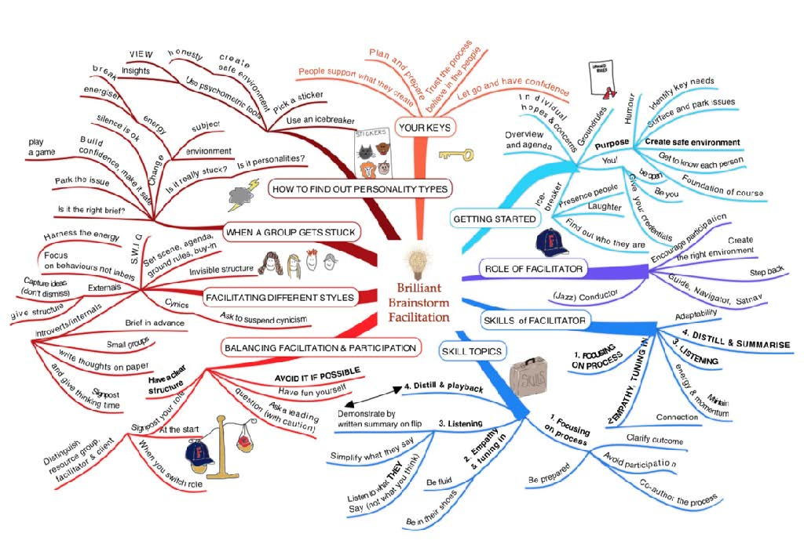
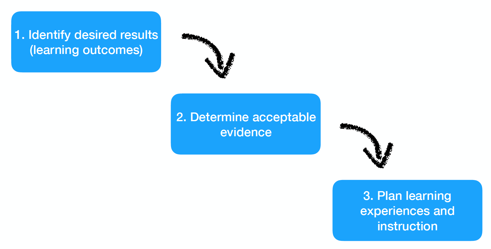

2026-05-11
Design Thinking
Backwards Learning Design
Design is a funny word. Some people think design means how it looks. But of course, if you dig deeper, it’s really how it works. ~ Steve Jobs
Design is the fundamental soul of a man-made creation that ends up expressing itself in successive outer layers of the project, or service. ~ Steve Jobs
Everyone designs who devises courses of action aimed at changing existing situations into preferred ones. ~ Herbert Simon
Christopher Alexander defines good design as the goodness of fit between the parts of the world over which we have control, what designers call form, and form’s context in the world as it is.


That is, Wiggins and McTighe (2005) argue:
understanding is revealed in performance (p. 153)

Assesses the learner’s ability to efficiently and effectively use a repertoire of knowledge and skill to negotiate a complex and multistage task. . . .
Allows appropriate opportunities to rehearse, practice, consult resources, and get feedback on and refine performances and products. . . . As the apprenticeship model in the trades has proven, learning is maximized when cycles of perform-feedbackrevise- perform guide the production of known high-quality products, judged against public performance standards. (p. 154)